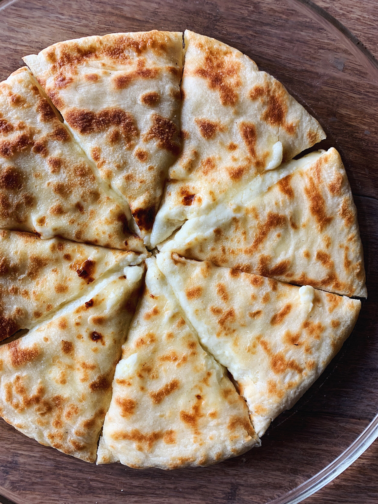

Imeruli Khachapuri

Description
Imeruli Khachapuri is a traditional Georgian cheese-filled bread from the
Imereti region. Unlike its boat-shaped Adjarian counterpart,
Imeruli Khachapuri is round and stuffed with a delicious mixture of tangy,
melty cheese, typically a blend of Imeretian and sulguni cheeses.
The dough is soft yet slightly crispy on the outside, making it a perfect
comfort food for any occasion. Serve it warm for the best experience!
Ingredients
Dough:
- 3 ½ cups (450g) all-purpose flour
- 1 cup (240ml) warm milk
- 1 packet (7g) dry yeast
- 1 tsp sugar
- ½ tsp salt
- 2 tbsp vegetable oil
Filling:
- 2 cups (250g) Imeretian cheese (or a mix of feta and mozzarella)
- 1 cup (125g) sulguni cheese (or a mix of mozzarella and provolone)
- 1 egg (optional, for creamier filling)
Brushing:
Steps
-
Prepare the Dough:
- In a small bowl, mix the warm milk, sugar, and dry yeast. Let it sit for 5-10 minutes until foamy.
- In a large mixing bowl, combine the flour and salt. Add the yeast mixture and vegetable oil.
- Knead the dough for about 8-10 minutes until smooth and elastic. If it's too sticky, add a little more flour.
- Cover the dough with a kitchen towel and let it rise in a warm place for about 1 hour or until doubled in size.
-
Make the Filling:
- Grate or crumble the cheeses into a bowl. If using an egg, mix it into the cheese for a creamier texture.
-
Assemble the Khachapuri:
- Preheat the oven to 400°F (200°C).
- Punch down the dough and divide it into two equal portions.
- Roll out one portion into a circle about 10 inches (25 cm) in diameter.
- Place half of the cheese filling in the center, leaving space around the edges.
- Fold the edges of the dough over the filling, gathering them toward the center. Pinch to seal and gently flatten into a thick, round disc.
- Carefully flip the dough over, so the sealed side is underneath, and roll it out slightly to an even thickness (about ½ inch or 1.5 cm). Repeat with the second portion of dough and filling.
-
Bake:
- Place the khachapuri on a parchment-lined baking sheet.
- Bake for 15-20 minutes or until golden brown on top.
- Remove from the oven and immediately brush with melted butter.
-
Serve:
Let the khachapuri cool slightly before slicing. Serve warm and enjoy!
Home